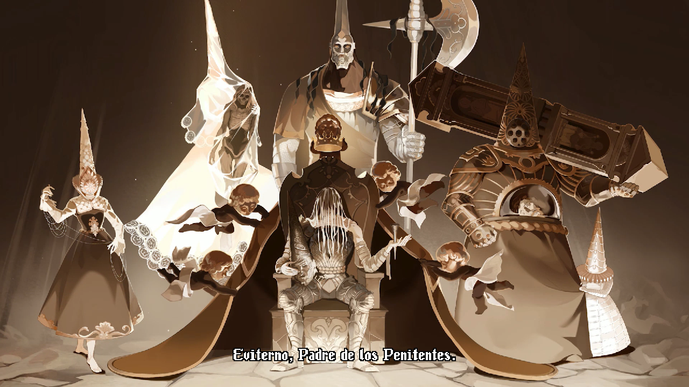
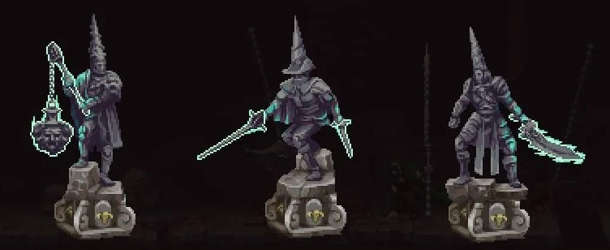
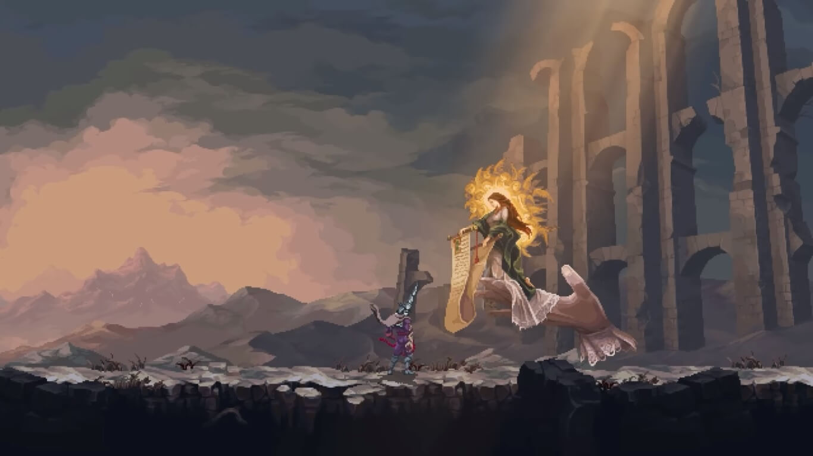
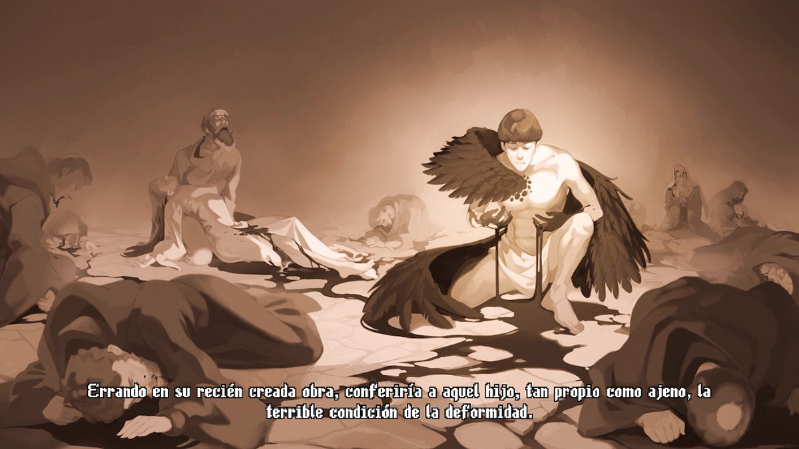
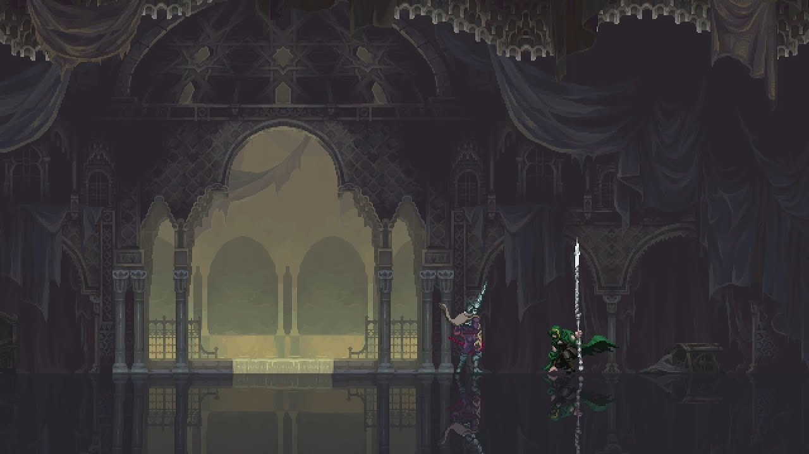
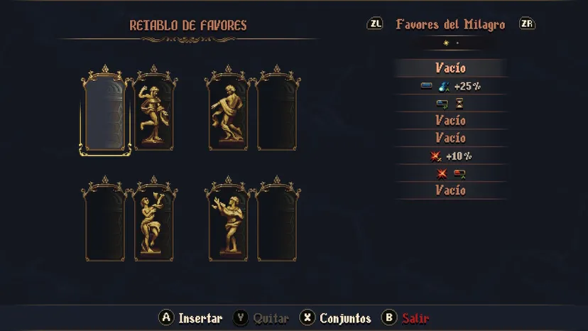
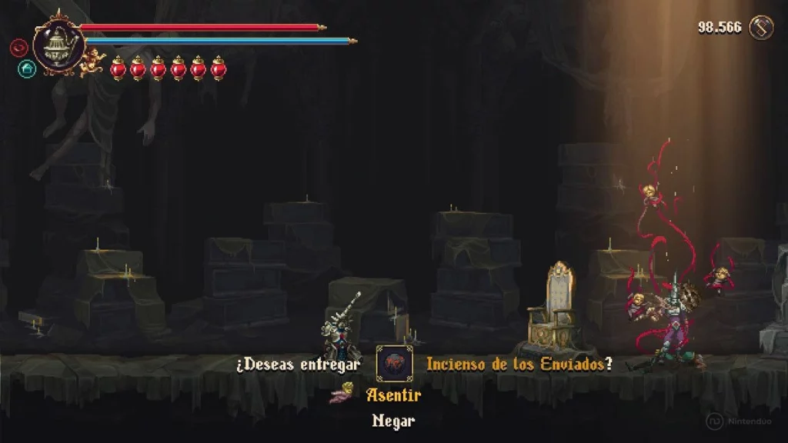

La trama está ambientada muchos años después del final del primer juego (el final cannon es el c, que se añadió con el dlc de Wounds of Eventide). El culto al Milagro había disminuido después de la muerte de las Altas Voluntades y Su Santidad Escribar, y durante un tiempo, Cvstodia experimentó una era sin dioses ni la influencia del Milagro. Sin embargo, el dolor y el sufrimiento permanecieron en el mundo, y la gente finalmente comenzó a orar por un poder mayor para aliviar su sufrimiento, dándole al Milagrola oportunidad de regresar.

Mientras tanto, Deogracias se hizo cargo del ataúd del Penitente y lo custodió hasta su muerte.
Finalmente, el Milagro reunió suficiente poder para crear un corazón enorme en el
cielo para dar a luz a un nuevo niño. Para proteger el corazón, el Milagro resucitó
a sus seguidores más leales, la Archicofradía encabezada por
[el primer Penitente, Eviterno].

Posteriormente, Crisanta intentó poner fin a los planes del Milagro,
pero Eviterno la detuvo y la mató. El regreso del Milagro sirvió
también para resucitar al Penitente, obligándolo a continuar su penitencia.
Cuando el Penitente sale del ataud, tiene que elegir entre tres armas, para empezar la aventura.

Luego de ello, se encontrará con Anunciada, quien le explicará su misión. Conseguir los Tres Remordimientos, para hacer bajar el templo sobre la que se alza el corazón donde nacerá el [Último Hijo del Milaro]. La misión del Penitente es detener su nacimiento.

Luego de hacer descencer los Templos Alzados, recibirá una misión a manos del Hijo, el cual le cuenta al Penitente su historia. Tiempo atrás, una pareja rezó sin descanso al Milagro para que les concediera un hijo. Este, conmovido por la devoción de la pareja, les concedió su deseo, mas la voluntad del Milagro nunca se manifiesta de forma corriente. El hijo nació con deformidades y trayendo un tumulo de desgracias entre los habitantes de Custodia.

Finalmente, el Hijo le encomienda la misión, de recolectar las 5 llaves que abran cada una de las jaulas que coronan su ataud, para así poder ascender hasta la zona de las Lluvias Carmesí, donde se encuentra el corazón que dará vida al Último Hijo.
Antes de pelear contra [Svsona, Fermosa Fembra], debemos hablar con Yerma y entregarle el Sánto Óleo de la Sempiterna Unción, para que así nos ayude en la batalla contra el jefe y así obtener el final bueno de su historia

El final obtenido al acabar el juego depende de una simple acción. En la zona del Altar de las Cinco Palomas, hay una puerta a la derecha que se abrirá cuando obtengamos cuatro estatuas determinadas y las coloquemos en la siguiente posición.

Luego de esto, podremos acceder a la habitación en la que encontraremos un crematorio donde se nos dará la opción de quemar las estatuas, obteniendo así el Incienso de los Enviados. Luego de derrotar a Eviterno, se nos dará la opción de ascender. Para obtener el final bueno deberemos ascender usando el incienso y para el malo, sin el incienso.

La dificultad del jefe no cambiará, solo la cinemática final